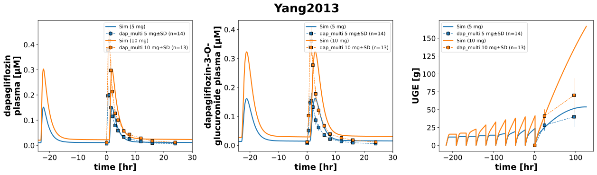

|  |
../../../../experiments/studies/yang2013.py
from typing import Dict
from sbmlsim.data import DataSet, load_pkdb_dataframe
from sbmlsim.fit import FitMapping, FitData
from sbmlutils.console import console
from pkdb_models.models.dapagliflozin.experiments.base_experiment import (
DapagliflozinSimulationExperiment,
)
from pkdb_models.models.dapagliflozin.experiments.metadata import Tissue, Route, Dosing, ApplicationForm, Health, \
Fasting, DapagliflozinMappingMetaData
from sbmlsim.plot import Axis, Figure
from sbmlsim.simulation import Timecourse, TimecourseSim
from pkdb_models.models.dapagliflozin.helpers import run_experiments
class Yang2013(DapagliflozinSimulationExperiment):
"""Simulation experiment of Yang2013."""
doses_single = [5, 10]
doses_multi = [5, 10]
colors = {
5: "tab:blue",
10: "tab:orange",
}
info = [
("[Cve_dap]", "dapagliflozin"),
("[Cve_d3g]", "dapagliflozin 3-o-glucuronide"),
("KI__UGE", "glucose_cumulative amount")
]
bodyweights = {
5: 62.8,
10: 62.2,
} # [kg]
def datasets(self) -> Dict[str, DataSet]:
dsets = {}
for fig_id in ["Fig1", "Tab3"]:
df = load_pkdb_dataframe(f"{self.sid}_{fig_id}", data_path=self.data_path)
for label, df_label in df.groupby("label"):
dset = DataSet.from_df(df_label, self.ureg)
# unit conversion to mole/l
if label.startswith("dapagliflozin_"):
dset.unit_conversion("mean", 1 / self.Mr.dap)
elif label.startswith("dapagliflozin 3-o-glucuronide"):
dset.unit_conversion("mean", 1 / self.Mr.d3g)
dsets[f"{label}"] = dset
# console.print(dsets)
# console.print(dsets.keys())
return dsets
def simulations(self) -> Dict[str, TimecourseSim]:
Q_ = self.Q_
tcsims = {}
# single dose simulation
for dose in self.doses_single:
tcsims[f"po_dap{dose}_single"] = TimecourseSim(
[Timecourse(
start=0,
end=125 * 60, # [min]
steps=1000,
changes={
**self.default_changes(),
# physiological changes
"BW": Q_(self.bodyweights[dose], "kg"),
"[KI__glc_ext]": Q_(self.fpg_healthy, "mM"),
"GU__f_absorption": Q_(self.fasting_map["fasted"], "dimensionless"),
"f_cirrhosis": Q_(self.cirrhosis_map["Control"], "dimensionless"),
"KI__f_renal_function": Q_(self.renal_map["Normal renal function"], "dimensionless"),
# dose (IVDOSE, PODOSE)
"PODOSE_dap": Q_(dose, "mg"),
},
)]
)
# multi dose simulation
for dose in self.doses_multi:
tc0 = Timecourse(
start=0,
end=25 * 60, # [min]
steps=500,
changes={
**self.default_changes(),
"PODOSE_dap": Q_(dose, "mg"),
},
)
tc1 = Timecourse(
start=0,
end=24 * 60, # [min]
steps=500,
changes={
"KI__glc_urine": Q_(0, "mmole"), # reset UGE
"PODOSE_dap": Q_(dose, "mg"),
},
)
tc2 = Timecourse(
start=0,
end=125 * 60, # [min]
steps=500,
changes={
"KI__glc_urine": Q_(0, "mmole"), # reset UGE
"PODOSE_dap": Q_(dose, "mg"),
},
)
tcsims[f"po_dap{dose}_multi"] = TimecourseSim(
[tc0] + [tc1 for _ in range(8)] + [tc2],
time_offset=-9 * 24 * 60,
)
return tcsims
def fit_mappings(self) -> Dict[str, FitMapping]:
mappings = {}
# Fig1
for kp, data in enumerate(self.info):
sid, prefix = data[0], data[1]
for dose in self.doses_single:
tissue = Tissue.URINE if "cumulative" in prefix else Tissue.PLASMA
mappings[f"task_po_dap{dose}_{sid}"] = FitMapping(
self,
reference=FitData(
self,
dataset=f"{prefix}_SD_DAP{dose}",
xid="time",
yid="mean",
yid_sd="mean_sd",
count="count",
),
observable=FitData(
self, task=f"task_po_dap{dose}_single", xid="time", yid=sid,
),
metadata=DapagliflozinMappingMetaData(
tissue=tissue,
route=Route.PO,
application_form=ApplicationForm.TABLET,
dosing=Dosing.SINGLE,
health=Health.HEALTHY,
fasting=Fasting.FASTED,
),
)
# Fig2
for kp, data in enumerate(self.info):
sid, prefix = data[0], data[1]
for dose in self.doses_multi:
tissue = Tissue.URINE if "cumulative" in prefix else Tissue.PLASMA
mappings[f"task_po_dap{dose}_{sid}"] = FitMapping(
self,
reference=FitData(
self,
dataset=f"{prefix}_MD_DAP{dose}",
xid="time",
yid="mean",
yid_sd="mean_sd",
count="count",
),
observable=FitData(
self, task=f"task_po_dap{dose}_multi", xid="time", yid=sid,
),
metadata=DapagliflozinMappingMetaData(
tissue=tissue,
route=Route.PO,
application_form=ApplicationForm.TABLET,
dosing=Dosing.MULTIPLE,
health=Health.HEALTHY,
fasting=Fasting.FASTED,
),
)
# console.print(mappings)
return mappings
def figures(self) -> Dict[str, Figure]:
return {
**self.figure_single(),
**self.figure_multi(),
}
def figure_single(self) -> Dict[str, Figure]:
fig = Figure(
experiment=self,
sid="Fig1",
num_rows=1,
num_cols=3,
name=f"{self.__class__.__name__}",
)
plots = fig.create_plots(xaxis=Axis(self.label_time, unit=self.unit_time), legend=True)
plots[0].set_yaxis(self.label_dap_plasma, unit=self.unit_dap)
plots[1].set_yaxis(self.label_d3g_plasma, unit=self.unit_d3g)
plots[2].set_yaxis(self.label_uge, unit=self.unit_uge)
plots[0].xaxis.min = -2
plots[0].xaxis.max = 30
plots[1].xaxis.min = -2
plots[1].xaxis.max = 30
for kp, data in enumerate(self.info):
sid, prefix = data[0], data[1]
for dose in self.doses_single:
# simulation
plots[kp].add_data(
task=f"task_po_dap{dose}_single",
xid="time",
yid=sid,
label=f"Sim ({dose} mg)",
color=self.colors[dose],
)
# data
plots[kp].add_data(
dataset=f"{prefix}_SD_DAP{dose}",
xid="time",
yid="mean",
yid_sd="mean_sd",
count="count",
label=f"dap_single {dose} mg",
color=self.colors[dose]
)
return {
fig.sid: fig,
}
def figure_multi(self) -> Dict[str, Figure]:
fig = Figure(
experiment=self,
sid="Fig2",
num_rows=1,
num_cols=3,
name=f"{self.__class__.__name__}",
)
plots = fig.create_plots(xaxis=Axis(self.label_time, unit=self.unit_time), legend=True)
plots[0].set_yaxis(self.label_dap_plasma, unit=self.unit_dap)
plots[1].set_yaxis(self.label_d3g_plasma, unit=self.unit_d3g)
plots[2].set_yaxis(self.label_uge, unit=self.unit_uge)
plots[0].xaxis.min = -24
plots[0].xaxis.max = 30
plots[1].xaxis.min = -24
plots[1].xaxis.max = 30
for kp, data in enumerate(self.info):
sid, prefix = data[0], data[1]
for dose in self.doses_multi:
# simulation
plots[kp].add_data(
task=f"task_po_dap{dose}_multi",
xid="time",
yid=sid,
label=f"Sim ({dose} mg)",
color=self.colors[dose]
)
# data
plots[kp].add_data(
dataset=f"{prefix}_MD_DAP{dose}",
xid="time",
yid="mean",
yid_sd="mean_sd",
count="count",
label=f"dap_multi {dose} mg",
color=self.colors[dose]
)
return {
fig.sid: fig,
}
if __name__ == "__main__":
run_experiments(Yang2013, output_dir=Yang2013.__name__)
{kind=link}
{kind=link}